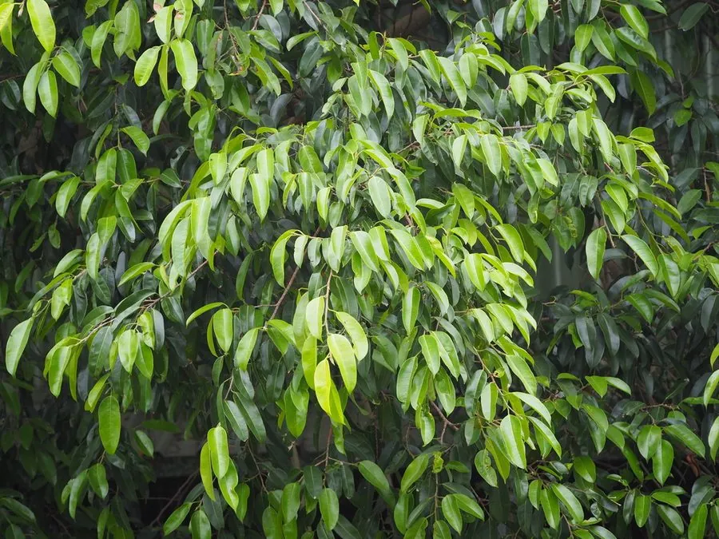

乔木 · 植物界
垂叶榕 Ficus benjamina

原产亚洲南部的常绿乔木，枝叶细密、小枝下垂，树冠优美，是室内外常见的观叶植物与南方行道树。
- 分类
- 门被子植物门纲木兰纲目蔷薇目科桑科属榕属
- 栖息环境
- 海拔 800 米以下的热带亚热带地区，喜高温多湿
- 地理分布
- 原产印度、马来西亚至澳大利亚北部，中国华南地区栽培
- 保护级别
- 暂无评估；中国未列入国家重点保护野生植物名录
物种志
垂叶榕为常绿乔木，高可达 20 m，树皮灰褐色、平滑；小枝细长下垂，叶片互生，椭圆形至卵状椭圆形，革质，先端渐尖，表面深绿有光泽。隐头花序生于叶腋，榕果球形，直径约 1 cm，成熟时橙红色或黄色，内含多数细小瘦果。
垂叶榕原产印度、缅甸、马来西亚至澳大利亚北部，中国广东、广西、福建、云南等地栽培，喜高温多湿、光照充足，也耐半阴，适宜疏松肥沃、排水良好的土壤。枝叶细密、小枝下垂，是著名的观叶植物，常作室内盆栽与绿篱；南方城市中常作为行道树与庭园树。垂叶榕的乳汁有毒，修剪时需避免接触皮肤与眼睛，树皮纤维可制绳。
形态与习性
- 株高可达 20 m，小枝下垂
- 花果期隐头花序，全年可开花
- 果型榕果球形，成熟时橙红色
- 光照喜光，也耐半阴
- 水分喜湿润，怕积水
- 主要用途室内观叶、行道树与庭园树、绿篱
趣味知识
- 垂叶榕的小枝细长下垂、叶片浓密，是常见的室内观叶植物。
- 垂叶榕的乳汁有毒，修剪时需避免接触皮肤与眼睛。
- 垂叶榕的榕果成熟时橙红色，成串挂在叶腋之间。